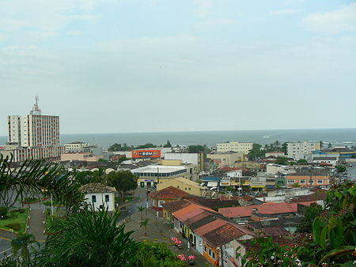

Informações sobre o estado

São Paulo é uma das 27 unidades federativas do Brasil. Está situado na Região Sudeste e tem por limites os estados de Minas Gerais a norte e nordeste, Paraná a sul, Rio de Janeiro a leste e Mato Grosso do Sul a oeste, além do Oceano Atlântico
a sudeste. É dividido em 645 municípios e sua área total é de 248 222,362 km², o que equivale a 2,9% da superfície do Brasil, sendo pouco maior que o Reino Unido. Sua capital é o município de São Paulo e seu atual governador é João Doria.Com
46,2 milhões de habitantes,ou cerca de 22% da população brasileira, é o estado mais populoso do Brasil, a terceira unidade política mais populosa da América do Sul (superado pela Colômbia e pelo restante da federação brasileira) e a subdivisão
nacional mais populosa do continente americano. A população paulista é uma das mais diversificadas do país e descende principalmente de italianos, que começaram a emigrar para o país no fim do século XIX, de portugueses, que colonizaram
o Brasil e instalaram os primeiros assentamentos europeus na região, de povos ameríndios nativos, de povos africanos e de migrantes de outras regiões do Brasil. Outras grandes correntes imigratórias, como de árabes, alemães, chineses,
espanhóis e japoneses, também tiveram presença significativa na composição étnica da população local.
Ir para o hino
Visitar indicadores sócio-econômicos
1-São Paulo

São Paulo é um município brasileiro, capital do estado homônimo e principal centro financeiro, corporativo e mercantil da América do Sul. É a cidade mais populosa do Brasil, do continente americano, da lusofonia e de todo o hemisfério sul.[São
Paulo é a cidade brasileira mais influente no cenário global, sendo, em 2016, a 11.ª cidade mais globalizada do planeta, recebendo a classificação de cidade global alfa, por parte do Globalization and World Cities Study Group & Network
(GaWC).O lema da cidade, presente em seu brasão oficial, é Non ducor, duco, frase latina que significa "Não sou conduzido, conduzo".
Fundada em 1554 por padres jesuítas, a cidade é mundialmente conhecida e exerce significativa influência nacional e internacional, seja do ponto de vista cultural, econômico ou político. Conta com importantes monumentos, parques e museus,
como o Memorial da América Latina, o Museu da Língua Portuguesa, o Museu do Ipiranga, o MASP, o Parque Ibirapuera, o Jardim Botânico de São Paulo e a avenida Paulista, e eventos de grande repercussão, como a Bienal Internacional de Arte,
o Grande Prêmio do Brasil de Fórmula 1, a São Paulo Fashion Week e a Parada do Orgulho LGBT.
O município possui o 10.º maior PIB do mundo, representando, isoladamente, 11% de todo o PIB brasileiro, 34% do PIB do estado, bem como 36% de toda a sua produção de bens e serviços, além de ser sede de 63% das multinacionais estabelecidas
no Brasil, sendo ainda responsável por 28% de toda a produção científica nacional em 2005, e por mais de 40% das patentes produzidas no país. A cidade também é a sede da B3 (sigla de Brasil, Bolsa, Balcão), a 5.ª maior bolsa de valores
do mundo em capitalização de mercado (dados de 2017), resultado da fusão da Bolsa de Valores, Mercadorias e Futuros de São Paulo (BM&FBOVESPA) com a Central de Custódia e de Liquidação Financeira de Títulos (CETIP). São Paulo também concentra
muitos dos edifícios mais altos do Brasil, como os edifícios Mirante do Vale, Itália, Altino Arantes, a Torre Norte, entre outros.
Ir para o hino
Visitar indicadores sócio-econômicos
2- São Caetano do Sul
São Caetano do Sul é um município brasileiro do estado de São Paulo, na mesorregião Metropolitana de São Paulo e microrregião de São Paulo. Está localizado na Zona Sudeste da Grande São Paulo, em conformidade com a lei estadual nº 1.139, de
16 de junho de 2011 e, consequentemente, com o Plano de Desenvolvimento Urbano Integrado da Região Metropolitana de São Paulo (PDUI).
É a cidade com o melhor IDH do Brasil (PNUD/2010), e também com o 48º maior PIB brasileiro. A população aferida no Censo de 2010 foi de 149.263 habitantes. A estimativa de população, calculada pelo IBGE com data de referência 1 de julho de
2019, foi de 161 127 habitantes. A área total da cidade é de 15,331 km², o que resulta numa densidade demográfica de 9.736,03 hab/km² (Censo de 2010).
É intensamente conurbada com São Paulo, Santo André e São Bernardo do Campo, fazendo com que se percam os limites físicos entre as cidades. São Caetano do Sul, juntamente com Ferraz de Vasconcelos, é uma das duas cidades do estado de São Paulo
que não são atravessadas por nenhuma rodovia estadual ou federal.
Ir para o hino
Visitar indicadores sócio-econômicos
3-São Bernado do Campo
São Bernardo do Campo é um município brasileiro do estado de São Paulo, na Mesorregião Metropolitana de São Paulo e microrregião de São Paulo. Pertence a Zona Sudeste da Grande São Paulo, em conformidade com a lei estadual nº 1.139, de 16
de junho de 2011 e, consequentemente, com o Plano de Desenvolvimento Urbano Integrado da Região Metropolitana de São Paulo (PDUI), e também à região não-oficial do Grande ABC.
A área total do município é de 409,88 km² e sua população de acordo com estimativas do Instituto Brasileiro de Geografia e Estatística (IBGE) de 2018, é de 833 240 habitantes, o que resulta em uma densidade demográfica de 2024,33 hab/km².
O município é formado pela sede e pelo distrito de Riacho Grande.
A origem da cidade remonta a 1553, quando é oficializada a Vila de Santo André da Borda do Campo, fundada pelo português João Ramalho, junto a seu sogro Tibiriçá. A Vila foi o primeiro núcleo de povoamento do território brasileiro fora do
litoral. O nome do município provém da Fazenda de São Bernardo, fundada pelos monges beneditinos em 1717, origem da ocupação moderna da cidade.
Ir para o hino
Visitar indicadores sócio-econômicos
4-Ribeirão Pires
Ribeirão Pires é um município do estado de São Paulo, na Região Metropolitana de São Paulo, integrando um grupo de municípios conhecidos como Região do Grande ABC, na Zona Sudeste da Grande São Paulo, em conformidade com a Lei Estadual nº
1.139, de 16 de junho de 2011 e, consequentemente, com o Plano de Desenvolvimento Urbano Integrado da Região Metropolitana de São Paulo (PDUI). A população estimada em 2020 era de 124.159 habitantes e a área é de 99 km², o que resulta
numa densidade demográfica de 1254,13 hab/km². O município é formado pela sede e pelos distritos de Jardim Santa Luzia e Ouro Fino Paulista.
Seus municípios limítrofes são Suzano (a nordeste), Rio Grande da Serra (a sudeste e sul), Santo André (a sudoeste) e Mauá (a noroeste). Tornou-se município em 30 de dezembro de 1953, quando foi desmembrada de Santo André. Sua data oficial
de emancipação político-administrativa foi instituída em 1º de janeiro de 1954 pela Lei Municipal 2.463/1983, sendo comemorado o seu aniversário no dia 19 de março, em homenagem a São José, Padroeiro da Cidade.
Ribeirão Pires é um dos 29 municípios paulistas considerados estâncias turísticas pelo Estado de São Paulo, por cumprirem determinados pré-requisitos definidos por Lei Estadual. Tal status garante a esses municípios uma verba maior por parte
do Estado para a promoção do turismo regional. Também, o município adquire o direito de agregar junto ao seu nome o título de Estância Turística, termo pelo qual passa a ser designado tanto pelo expediente municipal oficial quanto pelas
referências estaduais.
Ir para o hino
Visitar indicadores sócio-econômicos
5-Itanhaém

Itanhaém é um município da Baixada Santista, no estado de São Paulo, no Brasil. É a segunda cidade mais antiga do Brasil. A sua população em 2020 era de 103.102 habitantes locais e a área é de 601,711 km², o que resulta numa densidade demográfica
de 144,69 pessoas por quilômetro quadrado. Durante a época de temporada, entre os meses de dezembro e fevereiro, sua população pode passar de 300.000 pessoas devido à alta concentração de turistas.
O nome do município é incerto, com inúmeras possibilidades oriundas do tupi antigo. A primeira significa "pranto de pedra" ou "pedra que chora", originário da composição genitiva: itá "pedra" e nha-em "pranto". A segunda possibilidade, é que
"Itanhaém" signifique "pedra sonora" ou "pedra que canta" em alusão as águas que batiam nas pedras, e ecoava sons, através da composição de itá, "pedra", com nhe'eng (verbo), "que fala, ou que canta".
Itanhaém é um dos 15 municípios paulistas considerados estâncias balneárias pelo Estado de São Paulo, por cumprirem determinados pré-requisitos definidos por lei estadual. Tal status garante a esses municípios uma verba maior por parte do
estado para a promoção do turismo regional. Também, o município adquire o direito de agregar junto ao seu nome o título de "estância balneária", termo pelo qual passa a ser designado tanto pelo expediente municipal oficial quanto pelas
referências estaduais.
Ir para o hino
Visitar indicadores sócio-econômicos
6-Santo André

Santo André é um município brasileiro da Região do Grande ABC, localizado na Zona Sudeste da Grande São Paulo, parte da Região Metropolitana de São Paulo, em conformidade com a lei estadual nº 1.139, de 16 de junho de 2011 e, consequentemente,
com o Plano de Desenvolvimento Urbano Integrado da Região Metropolitana de São Paulo (PDUI).
Sua população estimada para 1.º de julho de 2020 era de 721 368 habitantes, ocupando uma área de 175,782km²
Santo André é a décima quinta cidade brasileira mais desenvolvida, e a oitava cidade mais desenvolvida do estado de São Paulo, segundo a ONU. É também a quinta melhor cidade do país onde criar filhos.
Ir para o hino
Visitar indicadores sócio-econômicos
7-Taubaté
Taubaté é um município brasileiro no interior do estado de São Paulo, localizado na região do Vale do Paraíba, a 130 km da capital do estado, São Paulo. O município é formado pela sede e pelo distrito de Quiririm.
Tradicional município paulista, desempenhou papel importante na evolução histórica e econômica do país. No ciclo do ouro, foi núcleo irradiador de bandeirismo, descobrindo ouro em Minas Gerais, fundando diversas cidades. No Segundo Reinado,
durante o surto cafeeiro do Vale do Paraíba, destacou-se como o município de maior produção na zona paulista, sediando o Convênio de Taubaté em 1906.Destaca-se como cidade pioneira no Vale do Paraíba, pois foi a sua primeira vila oficial
(o equivalente, hoje a município) em 1645, cabeça de comarca em 1832, cidade imperial em 1842[carece de fontes], centro industrial em 1891 e diocese em 1906.
A população de Taubaté, segundo estimativa do IBGE para 1.º de julho de 2020, era de 317 915 habitantes,ocupando a décima posição dentre os municípios mais populosos do interior de São Paulo, sendo o 24º mais populoso município do estado.
O produto interno bruto per capita do município em 2013 era de R$ 50 563,09 e PIB de 14,988 bilhões de reais.
Ir para o hino
Visitar indicadores sócio-econômicos
8-Botucatu
Botucatu é um município brasileiro do estado de São Paulo, distante 235 km da capital estadual, São Paulo, à qual se interliga pelas rodovias Marechal Rondon e Castelo Branco. Localiza-se a 22º53'09" de latitude sul, 48º26'42" de longitude
oeste. Está a 840 metros de altitude e seu clima é classificado como subtropical úmido. A população estimada em 2020 foi de 148 130 habitantes. O município é formado pela sede (que inclui o povoado de César Neto) e pelos distritos de Rubião
Júnior e Vitoriana.
O marco zero do município está localizado na Praça Emílio Pedutti ("Praça do Bosque"). O município possui clima ameno (temperatura média de 20°C) e altitude relativamente elevada, que varia de 756 metros na baixada (antigo matadouro) a 920
metros no Morro de Rubião Júnior (ponto mais alto).
O nome do município vem de ybytukatu, que, em língua tupi, significa "vento bom". Por isso Botucatu é conhecida como "cidade dos bons ares". Em 1720, era a designação dada às terras atribuídas em sesmarias no interior paulista.[carece de fontes]
Os mistérios e lendas que ainda envolvem Botucatu datam do período pré-cabralino, quando teria sido ponto de passagem no Caminho do Peabiru, trilha indígena que ligava o litoral atlântico às terras peruanas. O povoamento de fato teve início
entre o ribeirão Lavapés e a praça Coronel Moura, onde se concentrava parte da tribo dos índios caiouás.
Ir para o hino
Visitar indicadores sócio-econômicos
9-Caraguatatuba
Caraguatatuba é um município brasileiro no litoral norte do estado de São Paulo. Pertence à Mesorregião do Vale do Paraíba Paulista e Microrregião de Caraguatatuba. Localizando-se a leste da capital do estado, distando desta cerca de 178 km.
A cidade ocupa uma área de 484,947 km². Em 2019 sua estimativa populacional foi de 121 532 habitantes, resultando em uma densidade demográfica de 250,6 hab/km², sendo nesse ano o 71.º mais populoso de São Paulo e o 260.º do país. O município
é formado pela sede e pelo distrito de Porto Novo
A cidade tem uma temperatura média anual de 25 °C e na vegetação original do município predomina a mata atlântica. O seu Índice de Desenvolvimento Humano (IDH) é de 0,759, considerando-se assim como elevado em relação ao país, sendo o 169º
maior do estado.
Foi elevada à categoria de vila em 1770. O crescimento do povoado veio com a chegada de famílias de estrangeiros, que se instalaram na Fazenda dos Ingleses. A propriedade se estabeleceu em 1927 e trouxe benefícios como o aumento da população,
a formação de trabalhadores agrícolas e artesãos, o surgimento do comércio e o crescimento substancial da arrecadação municipal.
Ir para o hino
Visitar indicadores sócio-econômicos
10-Barueri
Barueri é um município da Região Metropolitana de São Paulo, no estado de São Paulo, na Região Sudeste do Brasil. Dista 26 km da Praça da Sé, marco zero da capital paulista. O município é formado pela sede e pelos distritos de Aldeia, Jardim
Belval e Jardim Silveira.
Sua população foi estimada no ano de 2010 em 240 656 habitantes, pelo Instituto Brasileiro de Geografia e Estatística sendo a 29º cidade mais populosa do Estado e a terceira cidade mais populosa da Microrregião de Osasco. Sua área é de 66,14
quilômetros quadrados, o que resulta numa densidade demográfica de 3 638,5 habitantes por quilômetro quadrado.
Barueri, assim como a maior parte dos municípios da Região Metropolitana de São Paulo, tem uma temperatura média anual de 18 graus centígrados e sua vegetação original é a da Mata Atlântica. A economia de Barueri é baseada na arrecadação de
impostos provenientes da prestação de serviços. Em 1973, um terreno de 500 hectares comprado em Barueri, a Fazenda Tamboré, deu origem a um dos bairros mais famosos do Brasil, Alphaville. Hoje, o bairro é um dos maiores polos industriais
e comerciais do Estado e gera a maior parte dos impostos da cidade.
Ir para o hino
Visitar indicadores sócio-econômicos